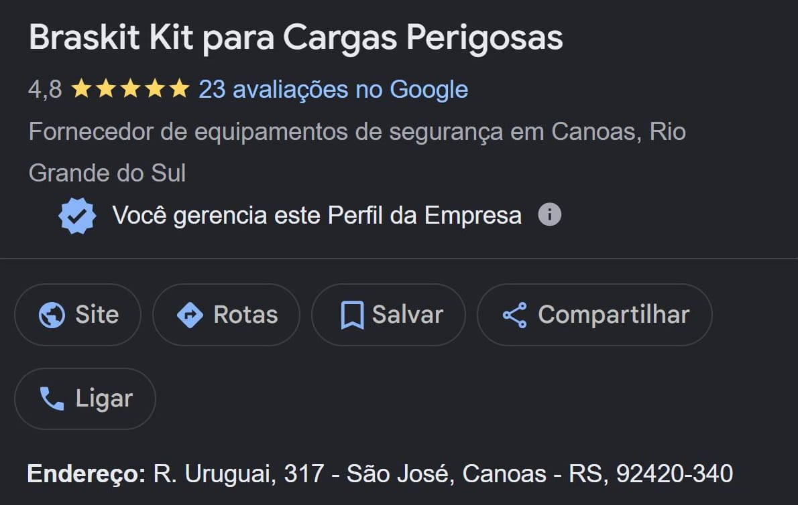

Braskit Cargas Perigosas · Perfil da Empresa no Google Entregue
A Braskit é a primeira no Google em Canoas.
Resultado
1º lugar no Google, com nota 4,8.
Primeira na busca por kit para cargas perigosas em Canoas. Até eu refazer o perfil, uma loja aberta em 1985 aparecia no Google com bairro errado, descrição em branco e nenhum produto cadastrado.

O problema.
A Braskit vende equipamento para transporte de produto perigoso: kit de emergência, placa de risco, painel de segurança, cone, capa e EPI. Quem compra é motorista e transportadora que precisa rodar dentro da norma, e quase sempre precisa para hoje.
Quem tem pressa não abre dez sites. Procura no Google, olha o mapa, vê a nota e liga. Por isso o perfil da empresa costuma ser a primeira coisa que esse cliente encontra.
O perfil da Braskit estava pela metade. O bairro cadastrado era São Luís, que não é onde a loja fica. A descrição estava em branco, a data de abertura não aparecia, e não havia catálogo, forma de pagamento nem serviço cadastrado. Quarenta anos de loja não contavam a favor dela.
O antes e o depois, campo a campo.
-
Endereço
Antes: bairro cadastrado como São Luís, que não é onde a loja fica.
Depois: R. Uruguai, 317, São José. O bairro foi corrigido no Google.
-
Descrição
Antes: campo em branco.
Depois: texto próprio explicando o que a loja resolve para o motorista, escrito a partir de um questionário respondido pelos proprietários.
-
Tempo de mercado
Antes: data de abertura não informada, e o Google não exibia nada.
Depois: 5 de setembro de 1985 cadastrado. Quatro décadas de loja passaram a contar a favor dela.
-
Horários
Antes: sem feriados e sem o intervalo do meio-dia.
Depois: semana, intervalo de almoço, sábado e feriados definidos. O atendimento de emergência ficou explicado na descrição.
-
Pagamento e serviços
Antes: nenhuma forma de pagamento e nenhum serviço cadastrado.
Depois: formas de pagamento e lista de serviços preenchidas, com os nomes que o cliente usa para procurar.
-
Catálogo
Antes: nenhum produto no perfil.
Depois: catálogo em 8 categorias, de sinalização a EPI, cada item com foto própria tirada na loja e cadastrado um a um.
-
Avaliações
Antes: respostas de uma palavra, algumas de anos atrás.
Depois: cada avaliação respondida uma a uma, citando o produto de que a pessoa falou e o endereço da loja.
-
Publicações
Antes: nenhuma rotina de publicação no perfil.
Depois: posts escritos por mim e aprovados pelos proprietários antes de ir ao ar.
Onde o perfil está hoje.
Conferido em 14 de setembro de 2026, com a busca feita de Canoas.
| Busca por “kit para cargas perigosas canoas” | 1º lugar no Google. No Maps, a busca abre direto no perfil da Braskit |
|---|---|
| Busca por “kit de emergência para transporte de produtos perigosos” no Maps | Abre direto no perfil da Braskit |
| Nota no Google | 4,8, em 23 avaliações |
| Botão Site no resultado da busca | Ativo, levando ao site da loja |
O que estes números são, e o que não são
São o estado do perfil e a posição na busca num dia só, medidos de Canoas. Não são projeção e não são promessa. Posição no Google muda conforme o lugar de onde a pessoa pesquisa, o aparelho e o histórico dela. Por isso eu refaço a medição todo mês, com print e data, e entrego ao cliente do jeito que saiu.
O site e o perfil, juntos.
O site da Braskit também passou por mim, num trabalho de SEO técnico. São duas fichas separadas, e o Google cruza as duas.
Com o perfil refeito, o botão Site do resultado da busca leva direto para o site, e quem quer ver o catálogo antes de ligar tem para onde ir.
Ficha técnica.
| Cliente | Braskit Kit para Cargas Perigosas |
|---|---|
| Tipo | Perfil da Empresa no Google, o antigo Google Meu Negócio |
| Trabalho | Diagnóstico, correção da base e rotina mensal |
| Onde fica | R. Uruguai, 317, São José, Canoas RS |
| Site | braskitcargasperigosas.com.br |